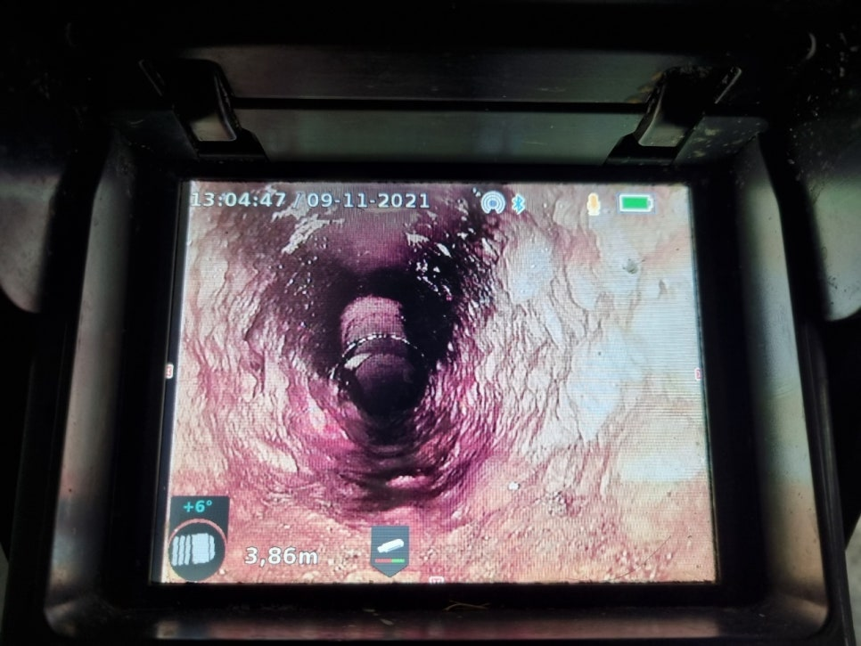
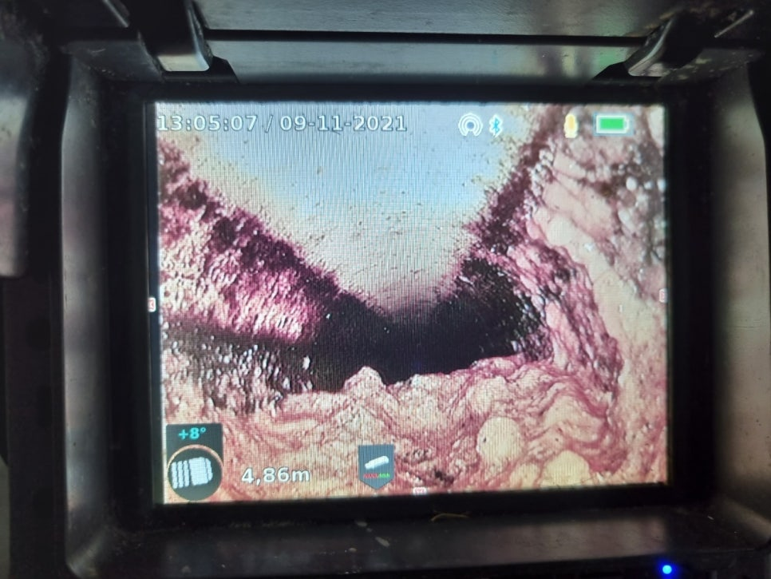
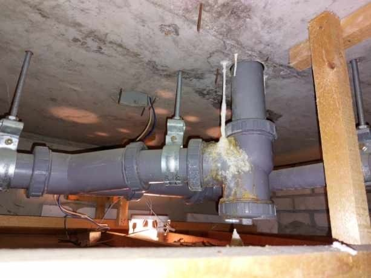
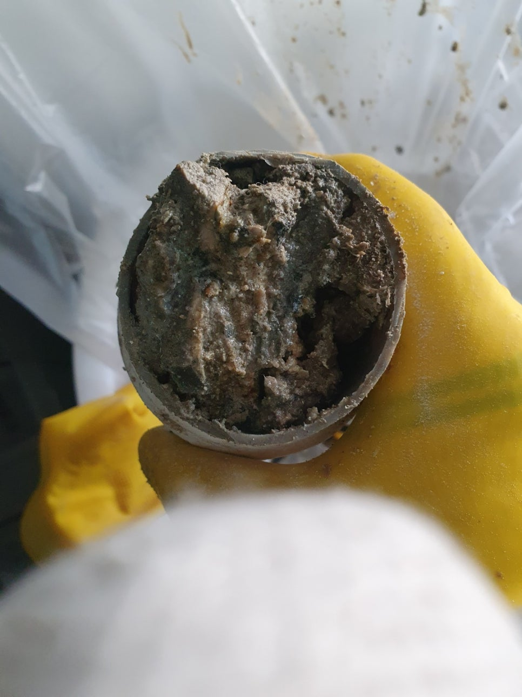
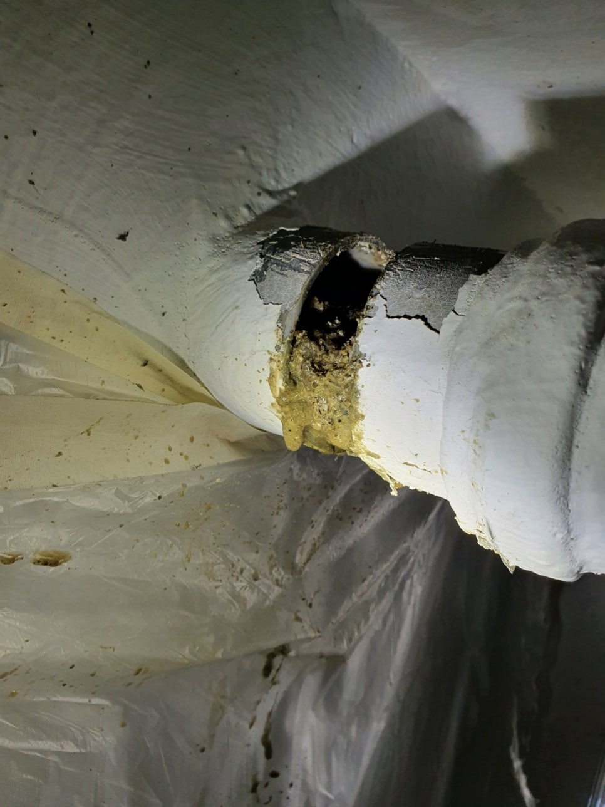

🏠 화성시 와우리 하수구막힘 동화리 하수구업체 잘하는 곳!
화성 와우리 변기막힘 전문 시공 후기

📋 작업 개요
- 위치: 화성 와우리, 와우리, 화성
- 서비스 유형: 변기막힘, 하수구막힘, 배관막힘, 맨홀막힘, 누수수리, 역류해결, 배관청소, 고압세척
- 작업 일시: 2022. 12. 3. 20:10
- 업체명: 하수구수사대 (010-5615-2118)
🔍 문제 상황
안녕하세요. 하수구수사대입니다.
우리가 일상에서 물을 사용하는 생활공간이라면 모든 공간에 하수구가 설치되어 있는데요.
하수구는 물이 외부로 흘러 나가게끔 도와주는 역할을 하는 설비라고 할 수 있습니다. 우리가 매일 같이 사용을 하는 하수구인 만큼 막힘이 발생하거나 역류까지 자주 발생하게 되는데요. 배수구는 건물을 지을 때는 필수로 설치되는 요소인 만큼 중요한 것이라고 할 수 있습니다.
오늘 방문한 현장은 화성시 와우리 하수구막힘 동화리 하수구업체 전문 업체를 통해서 해결한 현장인데요. 어떻게 해결을 하였는지 지금부터 알려드리도록 하겠습니다.

🔎 원인 분석
💡 전문가 진단: 우리가 일상에서 물을 사용하는 생활공간이라면 모든 공간에 하수구가 설치되어 있는데요.
우리가 생활하는 각각의 건물에는 환경에 따라서 구조와 특성이 조금씩 다른 배수관들이 설치가 됩니다.
구불구불한 형태나 T자 형태 그리고 일직선의 형태 등등 현장마다 배관의 모양은 모두 다르다고 할 수 있습니다. 그래서 작업 전에 현장 점검을 하는 것은 필수라고 할 수 있습니다. 이번 현장도 화성에 있는 곳으로 화성시 와우리 하수구막힘 동화리 하수구업체를 통해서 급하게 연락을 주신 곳이었습니다.
갑자기 공장에 있는 화장실의 변기가 자꾸 막히게 되면서 역류까지 하게 되고 결국은 막혀버리는 바람에 불편함을 토로하셨던 현장이었습니다. 공장에는 많은 직원들과 납품업자들이 오고 가는 곳인 만큼 빠른 해결이 필요했던 곳입니다. 다행히 연락을 주신 때는 주말이었기 때문에 사람은 상대적으로 적어서 하수구막힘 해결을 하기에 수월하였습니다.
문의전화 010-4437-9128
본격적으로 현장 해결을 하기 위해서 현장의 피해 원인부터 확인해 보기로 하였는데요.

🔧 작업 과정
배관 내시경을 통해서 내부를 확인한 결과 공장 내부의 대부분의 화장실 내부 배관에서 물이 시원하게 배수가 되지 않고 고여있는 모습을 볼 수 있었습니다. 이렇게 물의 배수가 원활하지 않게 되는 경우에는 기존에 빠지지 않고 고여있던 물로 인해서 역류가 발생하거나 누수까지 이어질 수 있게 되는 것입니다.
누수까지 발생을 하게 된다면 해결을 하는 비용에 시간까지 더 낭비가 될 수 있습니다. 그렇기 때문에 조그만 문제가 발견이 되는 즉시 전문 업체로 의뢰를 해서 해결을 하는 것이 좋습니다. 많은 분들이 물이 느리게 내려가거나 악취가 올라오는 것과 같은 막힘의 전조 현상을 그냥 방치를 해두시는 경우가 많이 있는데요 이러한 현상을 안일하게 생각을 하지 말고 조치를 취하는 것이 중요합니다.
이러한 전조 현상을 그대로 두면 하수구를 아예 사용하기 어려울 정도로 문제가 커질 수 있게 되는 것입니다.
그러므로 이렇게 다양한 전조 현상들이 있다면 즉시 전문 업체로 문의하시기 바랍니다. 문제의 원인 파악을 위해 메인 배관과 연결된 맨홀을 찾아보았는데요. 어느 지점의 맨홀에서부터 문제가 발생해서 결국 건물 내부가 전체적으로 막힘과 역류를 겪게 된 것이었습니다.
맨홀 커버를 열고 내시경 카메라를 이용해서 탐지를 하면서 그에 맞는 장비를 사용하였는데요. 내시경 카메라는 모든 현장에 동원되는 장비로 눈으로 확인하기 어려운 배관 내부의 상황을 확인할 수 있도록 하는 필수 장비입니다.
배관 내부는 아주 길고 복잡하게 연결이 되어 있는데요.
내시경 없이는 깊숙한 구간의 상태 확인을 하기 어렵기 때문에 업체 선정 시에는 내시경 장비를 보유하고 있는지 확인을 해보시기 바랍니다. 내시경을 통해서 내부를 보면서 고압세척 장비로 이물질을 제거하였는데요.


✅ 작업 완료
강한 수압으로 배관 내부를 청소를 하기 때문에 쌓여있는 이물질들을 모두 제거할 수 있는 것입니다. 화성시 와우리 하수구막힘 동화리 하수구업체 반복작업을 통해서 이물질을 모두 제거를 한 후에 작업을 마무리하였습니다.
경기도 화성시 효행로 1060 10층 1004-A246호




⚠️ 베란다 누수 및 방수 관리 방법
- ✅ 비가 많이 올 때 창틀 주변이나 아래층 천장에 얼룩이 생기는지 정기적으로 확인해 보세요.
- ✅ 우수관 주변 실리콘 마감이 들뜨거나 깨진 틈새가 있는지 손상 여부를 수시로 체크하세요.
- ✅ 베란다 바닥 타일의 줄눈(메지)이 소실되면 그 틈으로 물이 침투하여 누수가 유발됩니다.
- ✅ 누수 의심 증상 발견 시 방치하면 아래층 손실이 커지므로 즉시 전문가의 진단을 받으십시오.
💡 핵심 정리
- 확실한 장비 작업(내시경 점검 및 샤프트 스케일링)으로 원인을 뿌리 뽑습니다.
- 작업 후 1년 이내에 동일한 부위 재발 시 100% 무상 A/S 서비스를 보장합니다.
- 서울 · 경기 · 인천 전 지역에 24시간 언제든 긴급 출동할 수 있도록 항시 대기 중입니다.
❓ 자주 묻는 질문 (FAQ)
🚨 화성 와우리 변기막힘 문제로 고민이신가요?
정확한 원인 진단과 확실한 시공으로 재발 없는 해결을 약속드립니다.
24시간 긴급 출동 | 서울 · 경기 · 인천 전지역 | 1년 내 재발 시 무상 A/S